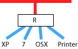
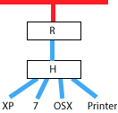
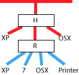
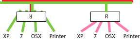

総合システムネットワーク講習会
総シスネットワークは夏休み頃から不調が目立つ。
目的
- 卒論シーズンを迎え、問題点をクリアする。
- 不調の原因を作らないよう、最低限を覚える。
- 責任者メールリストの作成。
この資料のアドレスは どこかに です。
総シスネットワークは夏休み頃から不調が目立つ。
この資料のアドレスは どこかに です。
dhcp30.mns.kyutech.ac.jp (150.69.84.30) at 00:0a:79:60:f5:f3 [ether] on eth0 dhcp37.mns.kyutech.ac.jp (150.69.84.37) at 00:3a:9d:20:ff:59 [ether] on eth0 dhcp35.mns.kyutech.ac.jp (150.69.84.35) at 20:c9:d0:2a:c2:6b [ether] on eth0 dhcp24.mns.kyutech.ac.jp (150.69.84.24) at 10:6f:3f:fc:b5:df [ether] on eth0
前スライドの「丸腰 PC」を除いて、
ただし、きちんとルータ下に収まった PC でも、 USBスティックやメールでウィルスを持ち込んでしまうことはある。 そんなのは別。守れない。
研究活動以外、YouTube や楽曲の違法ダウンロードでウィルス食らったやつは 自分で責任とれ。
研究室PCがウィルスに感染していないとしても、気になる点がいくつか。
同じ箱に見えるが、役割はまったく違う。




ルータとハブの場所が逆。守られているつもりで晒される PC。

ルータの向きが逆。


設定が確認できないときはつなぐな。
空いているケーブルを収めたつもりだったが、研究室がネットワークから切り離される（ことになっているが、、、）


自分PCのIPアドレスみると、 自分PCが正しくルータの下に収まっているか、 九工大ネットが毛嫌いする IPv6 は有効か、無効か を確認できる。
Windows なら「コマンドプロンプト」開いて ipconfig。IPAddress の右。
> ipconfig
Ethernet adapter ローカルエリア接続:
IP Address ............: 192.168.10.3
Subnet Mask ...........: 255.255.255.0
Default Gateway .......: 192.168.10.1
OSXやLinuxはターミナル開いて ifconfig。inet addr: の右が IP アドレス。
$ ifconfig
eth0 Link encap:Ethernet HWaddr 52:54:00:38:ce:ef
inet addr:10.0.3.24 Bcast:10.0.3.255 Mask:255.255.255.0
inet6 addr: fe80::5054:ff:fe38:ceef/64 Scope:Link
...
ifconfig の例にある fe80: で始まるようなのが見えるときは IPv6 が有効になっている。
{kind=link}
{kind=link}
{kind=link}